신환(고객)등록은 어떻게 하나요?
[고객관리] > [고객등록] 경로에서 고객 정보를 입력 후 등록이 가능해요.
또는 [대시보드] 좌측 검색창에 고객 정보(이름, 연락처)를 검색 후 중복 등록 여부를 확인하신 후 조회되는 정보가 없다면 [환자 등록 후 예약] 을 눌러 고객정보를 입력 후 등록해 주세요.
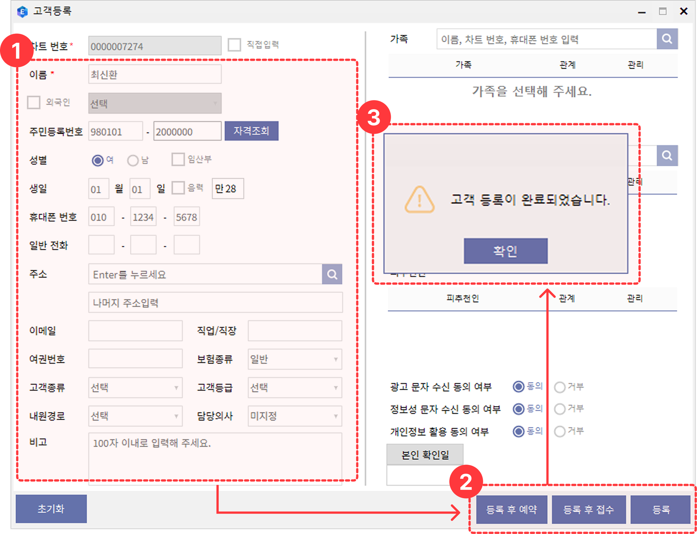
등록한 고객을 삭제하고 싶어요.
[고객관리] > [고객리스트] > 이름 또는 고객정보를 입력 후 [조회] > 조회된 고객 체크박스를 선택하신 후 우측 상단의 [선택고객삭제] 버튼을 눌러주세요.
고객 삭제 시 등록된 고객 정보, 포인트 적립·사용·차감 내역 등 고객 관련 기록은 함께 삭제되며 복구가 불가하니 이점 유의하여 진행해 주세요.
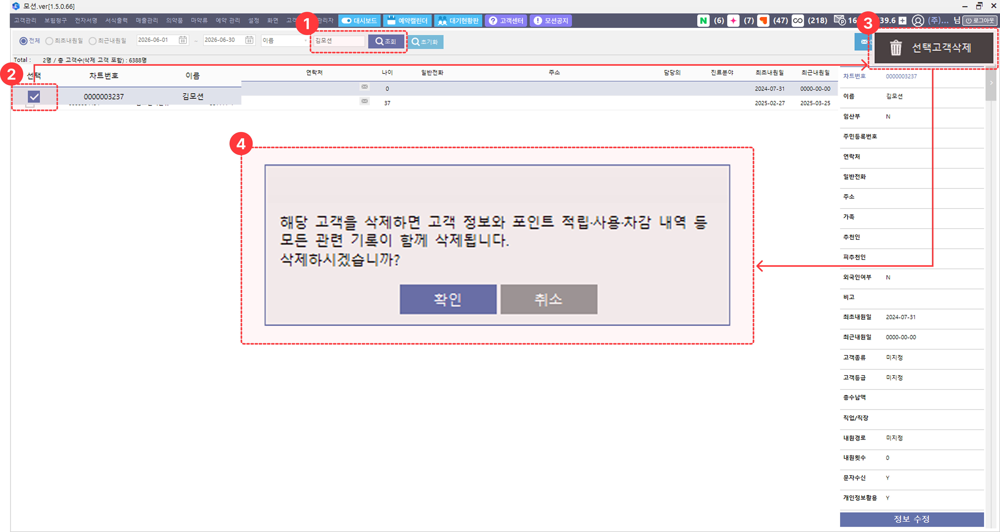
동일한 고객 정보로 차트가 중복 생성되었어요. 차트를 통합해 주세요.
차트 통합은 고객센터를 통해서 처리가 가능해요.
고객명, 차트 번호와 함께 고객센터로 문의해 주세요!. 모션E 상단 [고객센터] > [문의하기] > [상담원 연결] 버튼을 눌러 연결이 가능해요.
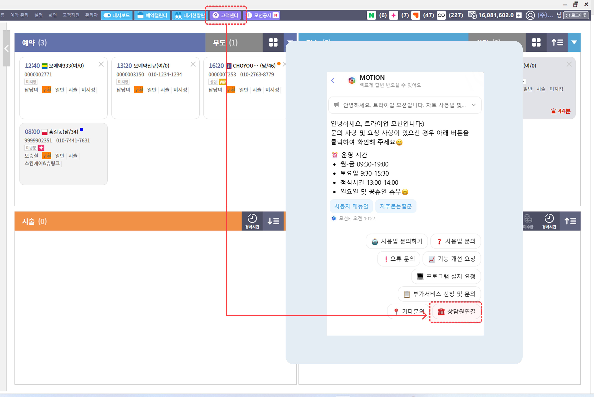
차트를 삭제하고 싶어요.
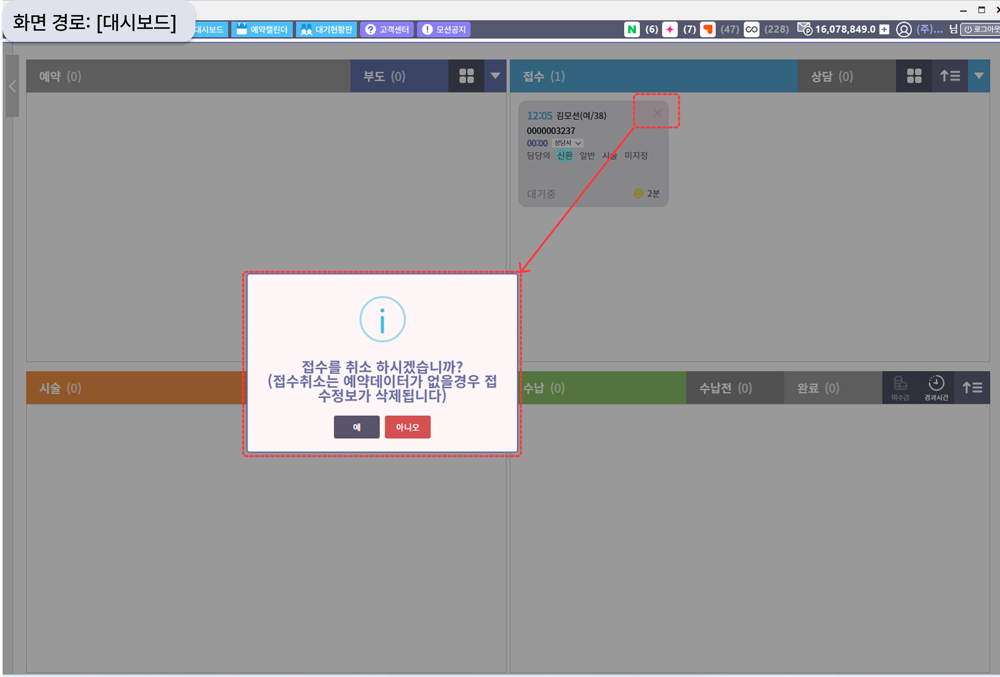
차트는 "만들어진 순서의 반대로" 지워야 삭제됩니다.
접수를 하면 차트가 생성되므로, 삭제하실 때는 진행하신 단계를 거꾸로 되돌려 주셔야 합니다. 예를 들어 접수 → 시술/처방 → 수납까지 완료된 차트라면, 반대 순서인 수납 취소 → 시술/처방 삭제 → 접수 취소 순으로 진행하시면 차트가 삭제됩니다.
*수납취소는 고객 차트 내 수납 탭에서, 시술은 상담 탭, 처방은 진료 탭에서 삭제가 가능합니다.
시술 오더는 어떻게 삭제하나요?
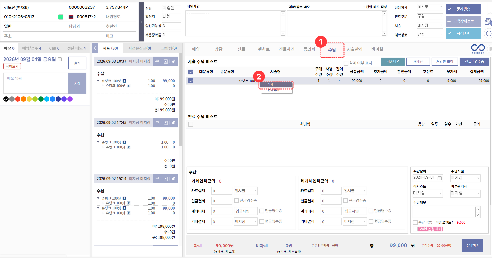
시술내역은 ‘미수납’ 상태에서만 삭제가 가능합니다. 고객 차트 내 [상담] 탭 > [시술내역] 버튼을 누르시면 전체 시술내역이 조회가 되며, 삭제할 내역의 [X]버튼을 눌러 삭제해 주세요.
처방 내역을 삭제하고 싶어요.
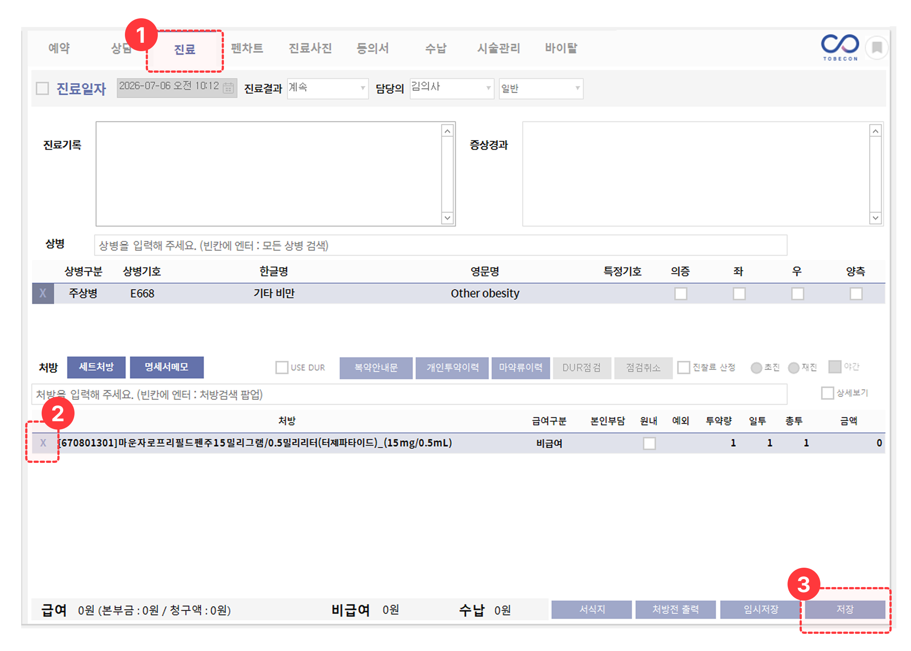
고객 차트 내 [진료] 탭에서 처방 된 내역의 [X]버튼을 눌러주시면 처방이 삭제됩니다.
삭제 후 [저장] 버튼을 눌러주세요.
상담메모 히스토리를 보고 싶어요.
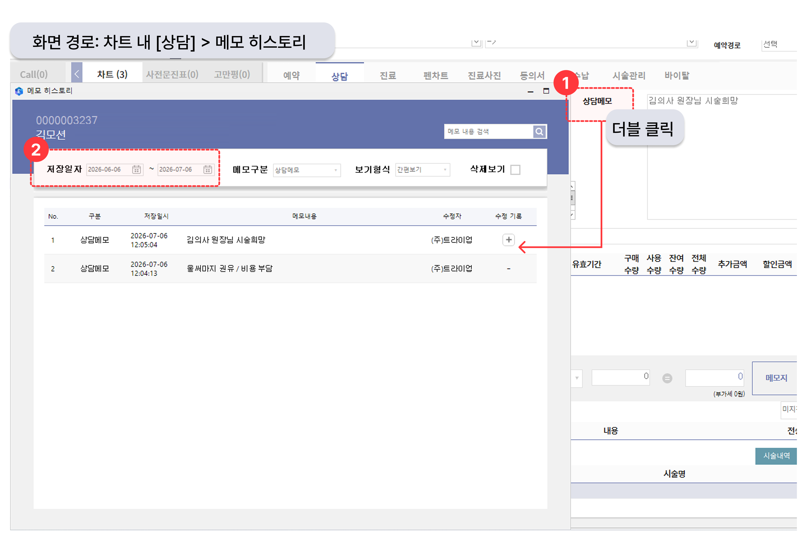
고객 차트 내 [상담] 탭> 상담메모 영역을 더블클릭 하면 이전 상담메모 히스토리를 확인할 수 있습니다.
상담메모 뿐만아니라, 예약/접수 메모, 어시메모 등 메모 영역은 더블클릭을 통해 히스토리 확인이 가능합니다.
DUR 점검 시 인증서가 나오지 않아요.
매출금액별 ‘총 진료비’와 ‘수납금액’의 합계가 맞지 않아요.
매출금액과 수납금액은 집계 기준이 달라 차이가 발생할 수 있습니다. 매출금액(총 진료비)에는 환자 본인부담금과 공단부담금이 모두 포함됩니다.
수납금액에는 환자가 실제로 납부한 본인부담금만 반영됩니다. 따라서 건강보험 청구 건이 포함된 경우 매출금액과 수납금액의 합계가 일치하지 않을 수 있습니다.
또한 미수금이 발생한 경우에도 조회 화면에 따라 금액 차이가 발생할 수 있습니다. 미수금은, [매출관리] > [미수금 내역]에서 조회 가능합니다.
※ 결산시스템의 미수금은 0원으로 수납 처리한 경우에만 미수금으로 집계됩니다. 단순히 수납 처리를 진행하지 않은 건은 결산시스템 > 미수금 메뉴에 표시되지 않을 수 있습니다. 매출과 수납을 비교할 때에는 총 진료비에서 보험청구액, 미수금을 제외하고 비교해 주세요.
상담사(상담실장) 별 한 달간 상담건수를 보고 싶어요.
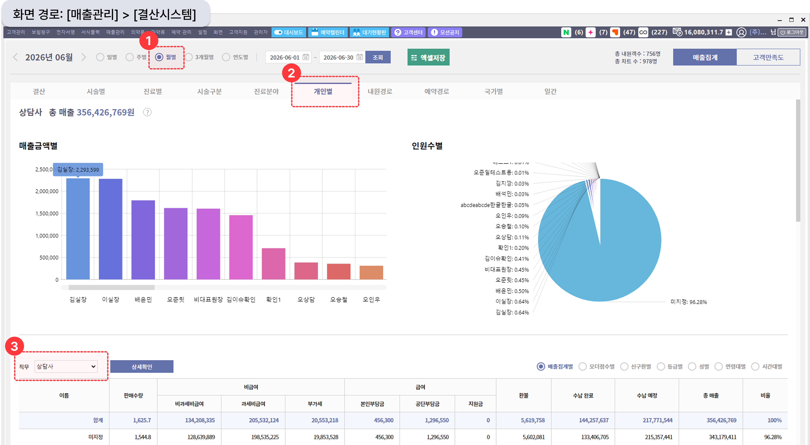
[매출관리] > [결산시스템] > 월별 선택, 개인별 탭에서 직무를 ‘상담사’로 선택하시면 상담사 별 해당 기간의 매출을 조회할 수 있어요.
고객 접수 시 상담사를 지정하지 않은 경우, 미지정으로 집계됩니다.
통계를 보고 싶어요.
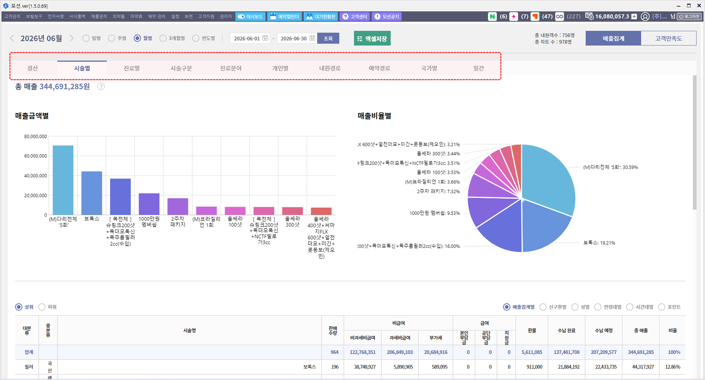
[매출관리] > [결산시스템] 메뉴를 통해 기간과 카테고리를 선택하여,
결산, 시술별, 진료별, 시술구분, 진료분야, 개인별, 내원경로, 예약경로, 국가별, 월간에 대한 통계를 확인할 수 있어요.
| 결산 | 총 진료비와 수납금액의 합계를 확인할 수 있습니다. |
|---|---|
| 시술별 | 고객 차트 내 [상답]탭에서 비급여 시술을 저장한 일자를 기준으로 집계됩니다. ※전액 멤버십 포인트를 사용한 시술은 그래프 우측 하단의 ‘포인트’를 선택한 경우에 표기됩니다. |
| 진료별 | 고객 차트 내 [진료]탭에서 처방된 내역을 확인할 수 있습니다. |
| 시술구분 | 객 예약 및 접수 시 선택한 ‘시술’에 해당하는 항목들이 집계됩니다. |
| 진료분야 | 고객 예약 및 접수 시 선택한 ‘진료분야’에 해당하는 항목들이 집계됩니다. |
| 개인별 | 의사, 상담사 등 직무에 따라 매출이 집계됩니다. |
| 내원경로 | 고객 등록 시 선택한 ‘내원경로’에 따른 매출을 확인할 수 있습니다. |
| 예약경로 | 고객 예약 시 선택한 ‘예약경로’에 따른 매출을 확인할 수 있습니다. |
| 국가별 | 고객 등록 시 선택한 국가에 따른 매출을 확인할 수 있습니다. |
| 일간/월간 | 일별, 주별, 월별 선택 시 일자별로 매출 확인이 가능하며, 3개월별, 연도별 선택 시 월 별로 매출 확인이 가능합니다. |
휴진일은 어떻게 설정하나요?
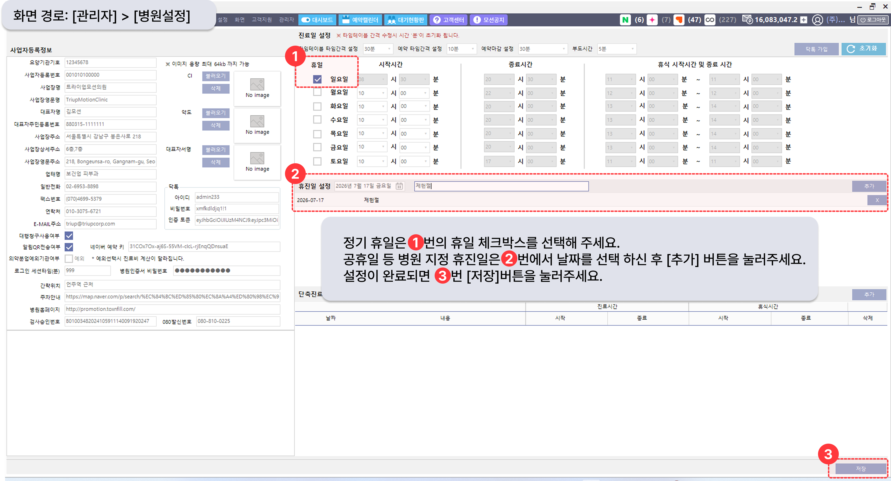
휴진일은 관리자 권한이 있는 계정으로 접속하여 설정이 가능해요. 차트 상단 [관리자] > [병원설정] > 진료일/휴진일 영역에서 설정해 주세요. 정기 휴일은 상단에서, 공휴일 등 병원 지정 휴진일은 하단의 휴진일 영역에서 날짜를 선택해 주세요. 선택 후 우측 하단의 [저장]버튼을 눌러주셔야 적용이 됩니다.
신규 입사한 선생님 계정을 추가하고 싶어요.
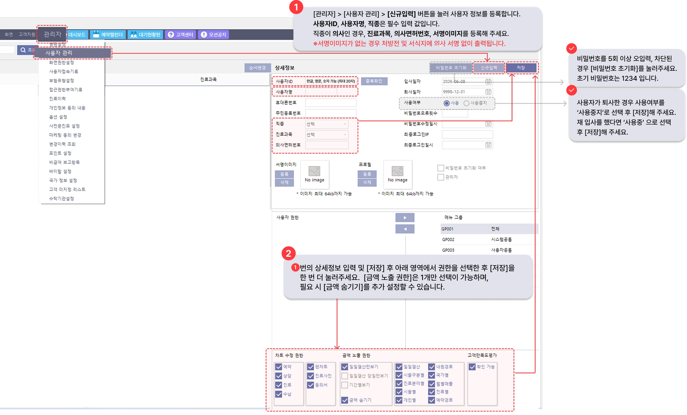
계정 생성은 관리자 권한이 있는 계정에서 생성이 가능해요. [관리자] > [사용자 관리] > 우측 상단 [신규입력] 을 통해 생성해 주세요.
※퇴사 후 재입사를 하신 경우, 기존의 계정을 활성화하여 사용이 가능합니다. [관리자] > [사용자 관리] > 좌측 상단 '전체' 선택 후 사용자명 검색 및 선택 > 사용여부 '사용'으로 변경 후 [저장]해 주세요.
특정 계정에서는 병원 매출을 안 보이게 설정하고 싶어요.
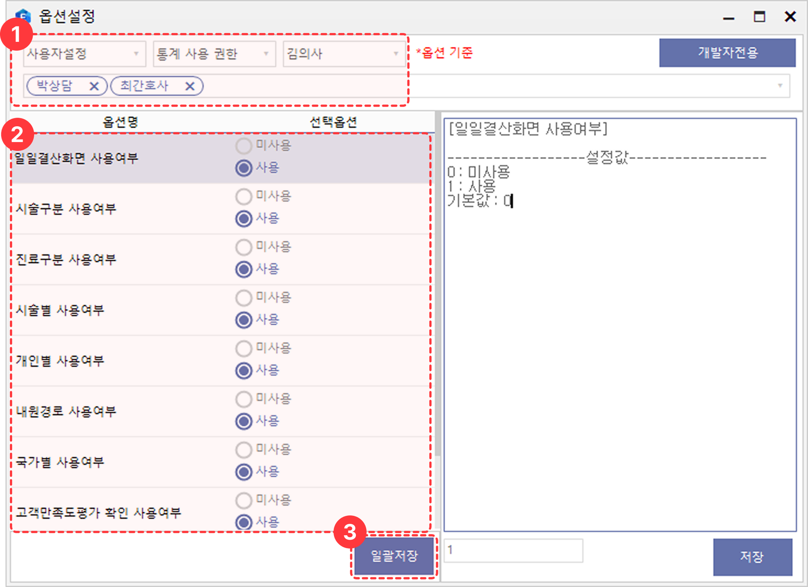
관리자 권한이 있는 계정으로 설정이 가능하며, [관리자] > [옵션설정] > ‘[사용자설정] > ‘통계 사용 권한’ > ‘사용자 이름’ 선택 후 전체 각각의 옵션명에 해당하는 선택옵션을 ‘미사용’으로 선택 후 [일괄저장]해 주세요.
동시 적용 사용자 선택란을 클릭 후 동시에 적용할 사용자 이름을 선택하면 선택된 사용자에게 일괄 적용됩니다. ※옵션설정 후 차트를 재실행 해주셔야 설정된 값으로 적용됩니다.
메모지 출력 시 상담메모가 안 나와요. (네모닉, POS뱅크)
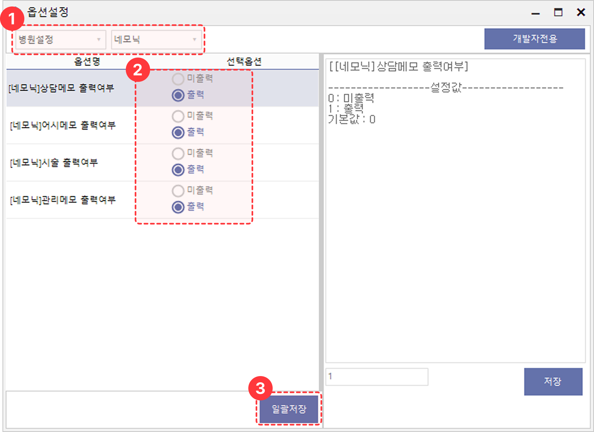
관리자 권한이 있는 계정으로 접속하여 아래 경로를 통해 메모지 출력 옵션 설정이 가능합니다.
- 경로: [관리자] > [옵션설정] > ‘병원설정’ > ‘네모닉’ 선택 후 선택옵션이 모두 ‘출력’상태로 되어 있는지 확인해 주세요.
‘미출력’으로 선택된 경우, 메모지 출력 시 해당 옵션은 출력되지 않아요. ※옵션설정 후 차트를 재실행 해주셔야 설정된 값으로 적용됩니다.
차트를 삭제했어요. 삭제된 차트 복구 가능한가요?
부분환불은 어떻게 하나요?
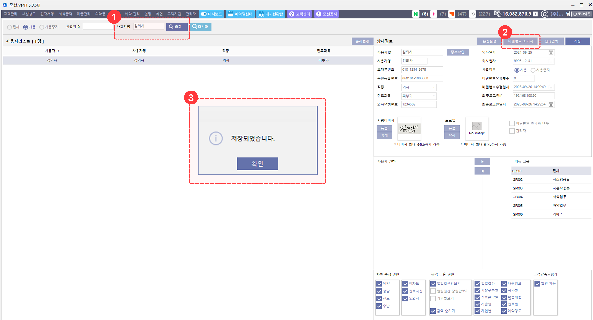
- [고객 차트] > [수납] 탭에서 화면 하단 [기존수납 내역]의 [+] 버튼을 클릭합니다.
- 부분환불할 수납 내역을 선택한 후, 하단 [시술 수납 내역]에서 해당 항목을 선택합니다.
- 환불금액 칸을 더블클릭하여 환불할 금액을 직접 입력합니다.
- 우측에서 환불일자를 선택한 뒤, 과세/비과세 결제수단 옆의 빈 입력란을 클릭하면 입력한 환불금액이 자동으로 반영됩니다.
- 마지막으로 [환불] 버튼을 클릭하면 부분환불이 완료됩니다.
자주 쓰는 상용구 설정은 어떻게 하나요?
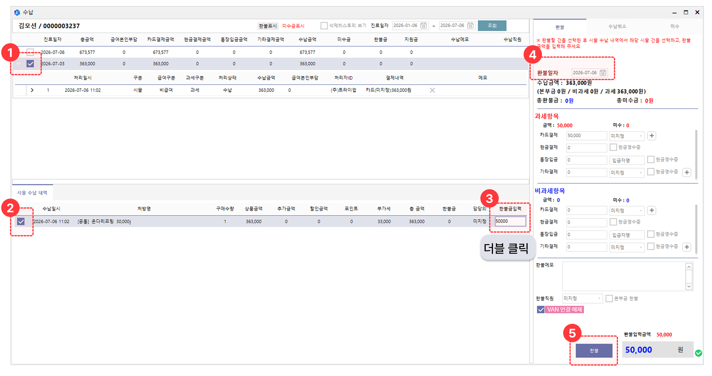
상담메모, 예약/접수메모, 어시메모, 관리메모 등 자주 사용하는 문구는 상용구로 등록하여 편리하게 사용할 수 있습니다.
- 경로: [설정] > [상용구 설정] >[추가] > 키워드와 내용을 입력한 후 [저장] 버튼을 클릭
상담메모, 예약/접수메모, 어시메모, 관리메모 등 입력란에서 / + 키워드를 입력한 뒤 스페이스바(Space)를 누르면 등록한 내용이 자동으로 입력됩니다.
예시)/흑자 입력 → 스페이스바 → 등록한 상용구 내용 자동 입력